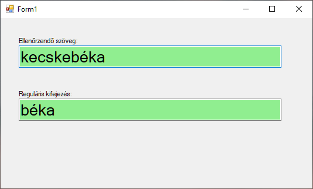

Reguláris kifejezések
Ez a dokumentum az itt található cikk kivonatolt változata. A linken további példákat is találsz.
Segítség a RegEx használatához
A RegEx vagy RegExp a Regular Expression rövid formája. Magyarul talán a "szabályos kifejezés" lenne a megfelelő fordítás. Ez a leírás azért született, hogy elindítson a technika megismerésében, de korántsem tekinthető teljesnek -- a cikk végén található URL-eken lehet folytatni a barangolást a "szabályos kifejezések" világában.
"Mindig babonás félelemmel néztem a RegEx mintáira. Volt dolgom egykét nyelvvel, de ez valami egészen bizarr dolog volt. Nem hinném, hogy létezik olyan tapasztalat aminek birtokában felfedezhető a RegEx sajátos logikája, szintaktikája, viszont az operátorok elolvasása után szinte arcul csap a felismerés: "ennyi az egész?" Legalább is ez lenne a cikk célja :)"
A RegEx lehetőséget ad szabályok, azaz minták egyszerű leírására. Ezekkel a mintákkal aztán sok hasznos dolgot tehetünk. Kereshetünk rájuk egy stringben, vagy kicserélhetjük őket valamilyen szabály szerint. Használhatjuk adatellenőrzésre vagy szerkezetek (pl. dátum) szétdarabolására, értelmezésére.
Essünk túl a kötelező analógián: a DOS-ból jól ismert joker karakterek is kifejezéseket írnak le, amiknek fájlokat feleltetünk meg, vagy van egyezés, vagy nem. A ka*.doc és ka???.doc kifejezések közül a kalap.doc mindkettőnek, még a kapa.doc csak az elsőnek felel meg.
Hogy még egy kicsit rosszabb legyen, mielőtt jobb lesz: DOS-os ka*.doc RegEx megfelelője: ka.*\.doc a ka???.doc pedig nem más, mint ka.{3}\.doc
RegEx operátorok
Karakter megfeleltetés
| jel | leírás |
|---|---|
| . (pont) | Bármilyen karakter: A b.kakifejezésnek megfelel a béka és bika szó is |
| [karakterek] | A kapcsoszárójelek között felsorolt karakterek valamelyikével megegyező karakter: A b[éa]ka kifejezésnek megfelel a béka és baka szó, a bika viszont nem. A - (minusz) jellel tartományt is megadhatunk. Például [0-9] megfelel bármely számjegynek vagy [a-zA-Z] bármely kis vagy nagybetűnek. |
| [^karakterek] | A kapcsoszárójelek között felsorolt karakterek egyikével sem egyező karakter (az előző operátor tagadása): A b[^é]ka kifejezésnek nem megoldása a béka. A baka és bika viszont igen. |
Többszörözés
| jel | leírás |
|---|---|
| ? | A megelőző minta 0 vagy 1 alkalommal fordul elő: A borda.? kifejezés igaz a borda és a bordal szavakra is. |
| + | A megelőző minta 1 vagy több alkalommal fordul elő: A bo.+ka kifejezésnek megfelel a boróka, a boka viszont nem. |
| * | A megelőző minta 0 vagy több alkalommal fordul elő: A bo.*ka kifejezésnek már megfelel a boka és boróka is. |
| {m,n} | Segítségével megadható minimum és maximum vagy pontosan megadott számú előfordulás - {*3} pontosan 3 előfordulás; {3,} legalább 3 előfordulás; {2,5} legalább 2 legfeljebb 5 előfordulás; {0,10} legfeljebb 10 előfordulás. A d.{0,5}ány igaz minden esetben, ha legfeljebb 5 karaktert kell helyettesíteni, például a dolmány esetén. A diszkópatkány viszont már nem akad fenn rajta. |
Horgonyok
Az előzőekben nem szemléltettem, de a felsorolt kifejezések akkor is igazak ha a vizsgált string belsejében találhatók meg. A b.ka igaz a bikaviadal mintára is.
| jel | leírás |
|---|---|
| ^ | A minta eleje: Ezzel jelezhetjük, hogy a kifejezést a minta elején keressük. A ^béka kifejezésnek megfelel a békanyál minta, a kecskebéka viszont nem. |
| $ | A minta vége: Az előző horgonyhoz hasonlóan a minta végét testesíti meg. A ék$ mintának megfelel minden erre végződő szó (kerék, pék). |
Természetesen kombinálhatók is. A ^p.k$ kifejezés csak akkor igaz, ha az input pontosan egy hárombetűs szó. A legpikánsabb nem megoldása, ahogy a pikáns sem. A pék vagy pók viszont jó.
Logika
| jel | leírás |
|---|---|
| | | Vagylagos egyezés: Két lehetőség közé téve bármelyikkel való egyezés találatot produkál. Gyakorlati példához picit előre kell ugorjunk, a normál (kerek) zárójelekre, jelen felhasználás viszont nem kíván különösebb magyarázatot: ka(lap|bát) |
| ( ) | Kifejezések csoportosítása: Nem csak a vagylagos egyezés az egyetlen lehetséges felhazsnálás. Egy csoportot létrehozva elláthatjuk paraméterrel például a (hókusz)?pók segítségével a hókuszpók és pók szavak is megtalálhatók. A csoportokra később hivatkozhatunk is, ez cserénél vagy stringek értelmezésénél lesz hasznos. |
Mintaprogram reguláris kifejezések kipróbálására

public partial class Form1 : Form
{
public Form1()
{
InitializeComponent();
}
private void textBoxText_TextChanged(object sender, EventArgs e)
{
DoCheck();
}
private void textBoxRegEx_TextChanged(object sender, EventArgs e)
{
DoCheck();
}
void DoCheck() {
try
{
Regex regex = new Regex(textBoxRegEx.Text);
if (regex.IsMatch(textBoxText.Text))
{
textBoxText.BackColor = Color.LightGreen;
}
else
{
textBoxText.BackColor = Color.LightCoral;
}
}
catch (Exception)
{
textBoxRegEx.BackColor = Color.LightCoral;
return;
}
textBoxRegEx.BackColor = Color.LightGreen;
}
}